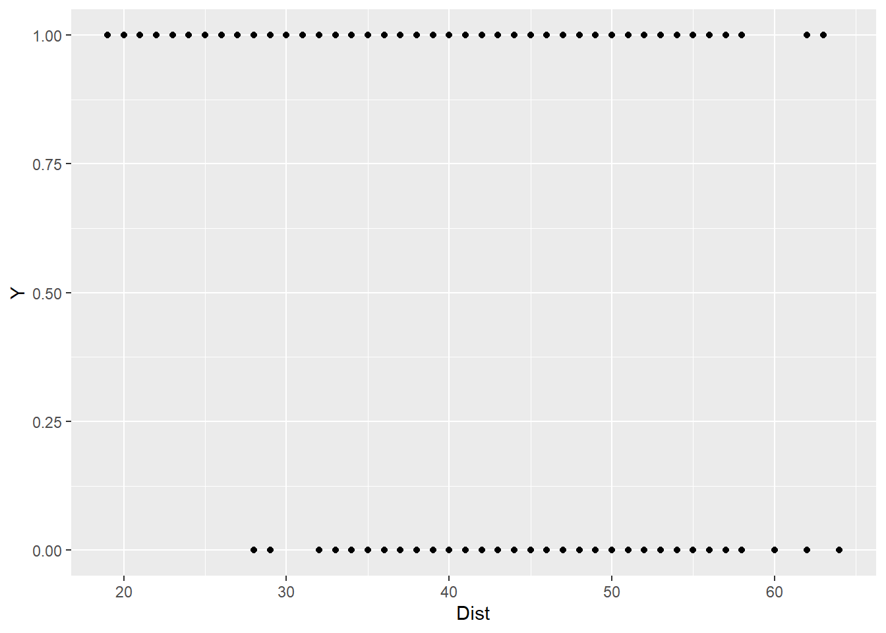
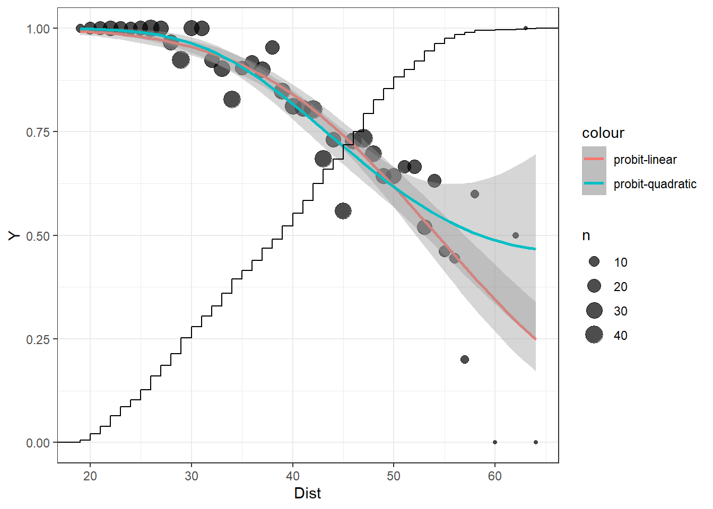
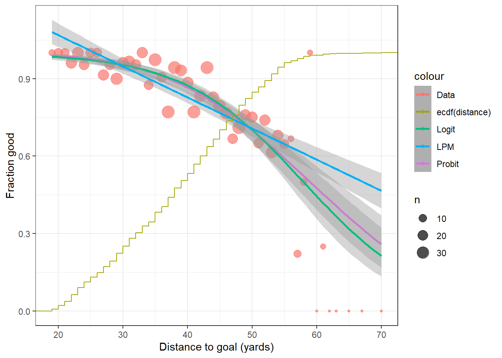
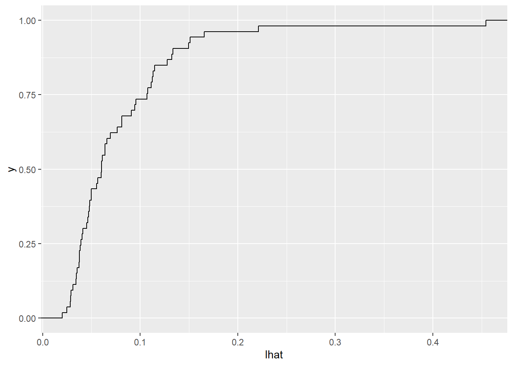
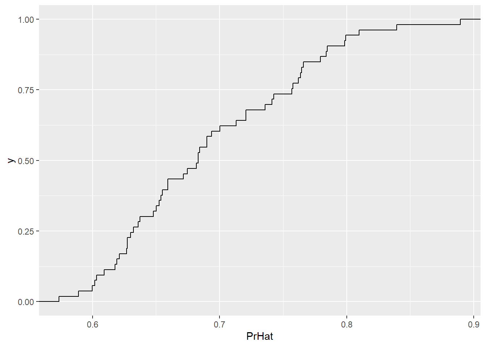
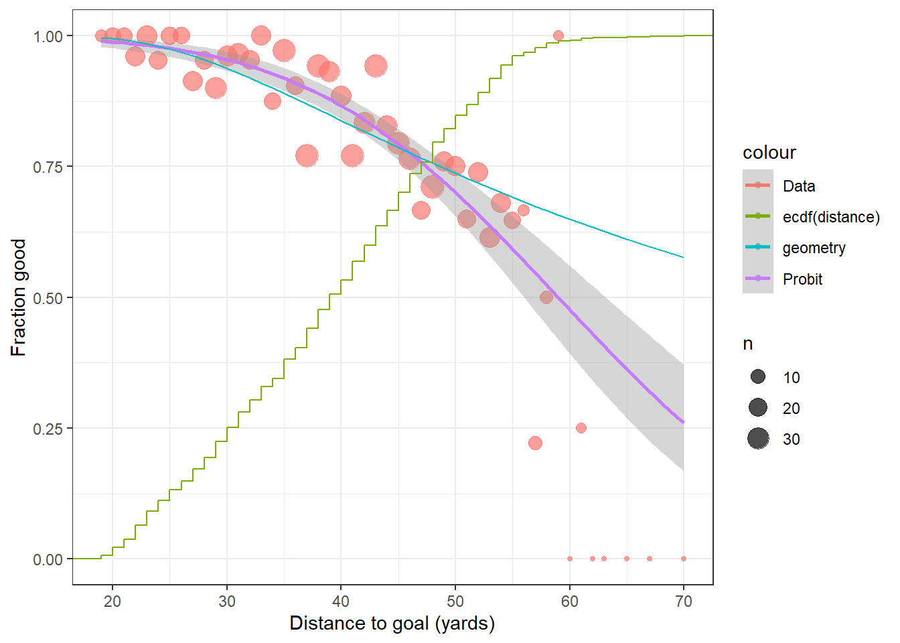
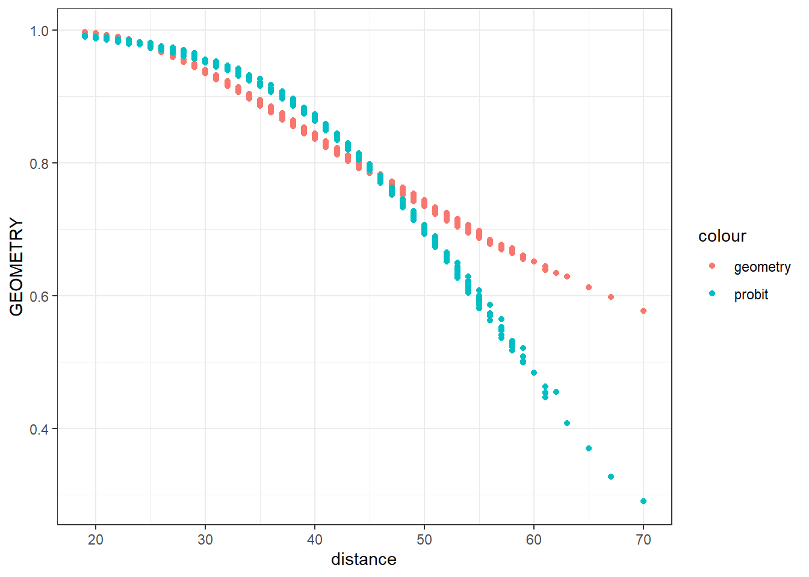
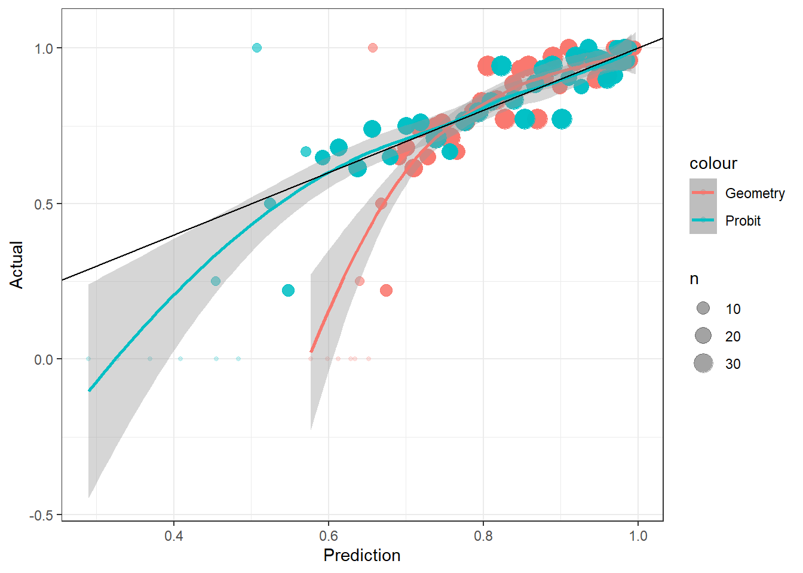

2 MLE and hypothesis testing
rm(list=ls())
library(dplyr)
knitr::opts_chunk$set(cache = TRUE)
D<-read.csv("Data/NFLFieldGoals1920scrape.csv") %>% data.frame()
#D %>% head() %>% knitr::kable()library(ggplot2)
D<-(D
%>% mutate(Y=1*(Good.=="Y"))
)
(
ggplot(D,aes(x=Dist,y=Y))
+geom_point()
)
Not so useful
DSummary<-(D
%>% group_by(Dist)
%>% summarize(
Y = mean(Y),
n = n()
)
)
(
ggplot(DSummary)
+geom_point(alpha=0.7,aes(x=Dist,y=Y,size=n))
+geom_smooth(data=D,aes(x=Dist,y=Y,color="probit-linear"),method="glm", method.args=list(family=binomial(link="probit")),size=1,formula = "y~x")
+geom_smooth(data=D,aes(x=Dist,y=Y,color="probit-quadratic"),method="glm", method.args=list(family=binomial(link="probit")),size=1,formula = "y~x+I(x^2)")
+stat_ecdf(data=D,aes(x=Dist))
+theme_bw()
)
library(stargazer)
m1<-glm(data=D,Y~1,family=binomial(link="probit"))
m2<-glm(data=D,Y~Dist,family=binomial(link="probit"))
m3<-glm(data=D,Y~Dist+ I(Dist^2),family=binomial(link="probit"))
stargazer(m1,m2,m3,type="html")| Dependent variable: | |||
| Y | |||
| (1) | (2) | (3) | |
| Dist | -0.070*** | -0.188*** | |
| (0.006) | (0.056) | ||
| I(Dist2) | 0.001** | ||
| (0.001) | |||
| Constant | 0.909*** | 3.792*** | 6.159*** |
| (0.046) | (0.263) | (1.171) | |
| Observations | 1,018 | 1,018 | 1,018 |
| Log Likelihood | -482.537 | -397.490 | -395.069 |
| Akaike Inf. Crit. | 967.074 | 798.981 | 796.138 |
| Note: | p<0.1; p<0.05; p<0.01 | ||
Likelihood ratio test: \[ H_0: \ \text{distance does not affect accuracy},\quad H_A:\ \text{distance affects accuracy}\\ H_0:\ \beta_\text{Dist}=0,\quad \beta_\text{Dist}\neq0 \]
In general: \[ 2(LL_U-LL_R)\xrightarrow[]{d}\chi^2(r) \] where \(r\) is the number of restrictions \(H_0\) imposes. Note that if \(X\sim N(0,1)\) then \(X^2\sim \chi^2(1)\), and in general \(\sum_{k=1}^K X^2_k \sim \chi^2(K)\)
- Compare models 1 and 2: \[ H_0:\ \Pr(Y=1)=\Phi(\beta_0),\quad H_A:\ \Pr(Y=1\mid D) =\Phi(\beta_0+\beta_1D) \]
LLU<-logLik(m2)
LLR<-logLik(m1)
LR <- 2*(LLU-LLR)
print(LR)## 'log Lik.' 170.0936 (df=2)print(paste("Critical Value",qchisq(0.95,1)))## [1] "Critical Value 3.84145882069412"- Compare models 1 and 3: \[ H_0:\ \Pr(Y=1)=\Phi(\beta_0),\quad H_A:\ \Pr(Y=1\mid D) =\Phi(\beta_0+\beta_1D+\beta_2D^2) \]
LLU<-logLik(m3)
LLR<-logLik(m1)
LR <- 2*(LLU-LLR)
print(LR)## 'log Lik.' 174.9362 (df=3)print(paste("Critical Value",qchisq(0.95,2)))## [1] "Critical Value 5.99146454710798"- Compare models 2 and 3: \[ H_0:\ \Pr(Y=1)=\Phi(\beta_0+\beta_1D),\quad H_A:\ \Pr(Y=1\mid D) =\Phi(\beta_0+\beta_1D+\beta_2D^2) \]
LLU<-logLik(m3)
LLR<-logLik(m2)
LR <- 2*(LLU-LLR)
print(LR)## 'log Lik.' 4.842615 (df=3)print(paste("Critical Value",qchisq(0.95,1)))## [1] "Critical Value 3.84145882069412"2.1 2020 NFL season
# source: http://nflsavant.com/about.php
library(kableExtra)
D2020<-read.csv("Data/pbp-2020.csv") %>% data.frame()
print(colnames(D2020))## [1] "GameId" "GameDate"
## [3] "Quarter" "Minute"
## [5] "Second" "OffenseTeam"
## [7] "DefenseTeam" "Down"
## [9] "ToGo" "YardLine"
## [11] "X" "SeriesFirstDown"
## [13] "X.1" "NextScore"
## [15] "Description" "TeamWin"
## [17] "X.2" "X.3"
## [19] "SeasonYear" "Yards"
## [21] "Formation" "PlayType"
## [23] "IsRush" "IsPass"
## [25] "IsIncomplete" "IsTouchdown"
## [27] "PassType" "IsSack"
## [29] "IsChallenge" "IsChallengeReversed"
## [31] "Challenger" "IsMeasurement"
## [33] "IsInterception" "IsFumble"
## [35] "IsPenalty" "IsTwoPointConversion"
## [37] "IsTwoPointConversionSuccessful" "RushDirection"
## [39] "YardLineFixed" "YardLineDirection"
## [41] "IsPenaltyAccepted" "PenaltyTeam"
## [43] "IsNoPlay" "PenaltyType"
## [45] "PenaltyYards"FG2020<-D2020 %>% filter(grepl("YARD FIELD GOAL",Description))
dim(FG2020)## [1] 970 45#kbl(head(FG2020 %>% select(Description)))Note that the description for these takes the form:
“XXX-F.Lastname dd YARD FIELD GOAL RESULT, WHY NOT GOOD, OTHER INFO”
Let’s see if we can pull these quantities out:
library(stringr)
library(dplyr)
FG2020<-(FG2020
%>% mutate(
name = str_match(Description, "-\\s*(.*?)\\s* ")[,2],
distance = as.numeric(str_split(Description,pattern=" ",simplify=TRUE)[,3]),
good=as.integer(grepl("IS GOOD,",Description))
)
)
FG2020[,c("name","distance","good")] %>% head() %>% kbl() | name | distance | good |
|---|---|---|
| B.MCMANUS | 52 | 1 |
| G.GANO | 31 | 1 |
| B.MCMANUS | 56 | 0 |
| D.CARLSON | 33 | 1 |
| B.MCMANUS | 22 | 1 |
| R.BLANKENSHIP | 56 | 0 |
FG2020Sum<-(FG2020
%>% group_by(distance)
%>% summarize(
Pr=mean(good),
n = n()
)
)
(
ggplot()
+theme_bw()
+xlab("Distance to goal (yards)")
+ylab("Fraction good")
+geom_point(data=FG2020Sum,aes(x=distance,y=Pr,size=n,color="Data"),alpha=0.7)
+geom_smooth(data=FG2020,aes(x=distance,y=good,color="Probit"),method="glm", method.args=list(family=binomial(link="probit")))
+geom_smooth(data=FG2020,aes(x=distance,y=good,color="Logit"),method="glm", method.args=list(family=binomial(link="logit")))
+geom_smooth(data=FG2020,aes(x=distance,y=good,color="LPM"),method="lm")
+stat_ecdf(data=FG2020,aes(x=distance,color="ecdf(distance)"))
)
2.1.1 Some standard models for making predictions:
Probit2020<-glm(data=FG2020,good ~ distance,family=binomial(link="probit"))
Logit2020<-glm(data=FG2020,good ~ distance,family=binomial(link="logit"))
LPM2020<-lm(data=FG2020,good ~ distance)
stargazer(Probit2020,Logit2020,LPM2020,type="html")| Dependent variable: | |||
| good | |||
| probit | logistic | OLS | |
| (1) | (2) | (3) | |
| distance | -0.058*** | -0.108*** | -0.012*** |
| (0.006) | (0.011) | (0.001) | |
| Constant | 3.442*** | 6.233*** | 1.309*** |
| (0.259) | (0.511) | (0.043) | |
| Observations | 970 | 970 | 970 |
| R2 | 0.117 | ||
| Adjusted R2 | 0.116 | ||
| Log Likelihood | -364.363 | -364.033 | |
| Akaike Inf. Crit. | 732.726 | 732.067 | |
| Residual Std. Error | 0.345 (df = 968) | ||
| F Statistic | 128.774*** (df = 1; 968) | ||
| Note: | p<0.1; p<0.05; p<0.01 | ||
2.1.2 A geometry-based alternative
A player makes a field goal attempt \(x\) yards from the goal (my data). The goal posts are \(d\) yards apart (given), and the crossbar is \(h\) yards above the ground (I attempted to use this too, but there are not enough long shots to identify the parameters for this model, see Appendix II). 
\[ \begin{aligned} x&=y\cos\theta\\ d/2&=y\sin\theta\\ y^2&=x^2+(d/2)^2\\ x&=\sqrt{x^2+(d/2)^2}\cos\theta\\ \cos\theta&=\frac{x}{\sqrt{x^2+(d/2)^2}}\\ \theta&=\cos^{-1}\left(\frac{x}{\sqrt{x^2+(d/2)^2}}\right) \end{aligned} \] Assume that the kick is made with angle error \(\epsilon\sim N(0,\sigma^2)\): \[ \begin{aligned} \Pr(\text{good}\mid x)&=\Pr\left(|\epsilon|<\theta\right)\\ &=\Pr(-\theta<\epsilon<\theta)\\ &=\Pr(-\frac{\theta}{\sigma}<z<\frac{\theta}{\sigma})\\ &=2(0.5-\Phi(-\theta/\sigma)) \end{aligned} \]
Log-likelihood: \[ \begin{aligned} \mathcal L(\sigma)&=\sum_{i=1}^N\log\Pr(\text{good}_i\mid x_i)\\ &=\sum_{i=1}^N\left[\log(2)+\log(0.5-\Phi(-\theta/\sigma))\right] \end{aligned} \]
#18 feet 6 inches
d<-(18+6/12)/3 # distance in yards
FG2020<-FG2020 %>% mutate(angle = acos(distance/sqrt(distance^2+(d/2)^2)))
head(FG2020[,c("name","distance","good","angle")]) %>% kbl()| name | distance | good | angle |
|---|---|---|---|
| B.MCMANUS | 52 | 1 | 0.0592255 |
| G.GANO | 31 | 1 | 0.0991363 |
| B.MCMANUS | 56 | 0 | 0.0550040 |
| D.CARLSON | 33 | 1 | 0.0931639 |
| B.MCMANUS | 22 | 1 | 0.1392445 |
| R.BLANKENSHIP | 56 | 0 | 0.0550040 |
## Likelihood function
angle<-FG2020$angle
good<-1*FG2020$good
II<-angle==angle
good ## [1] 1 1 0 1 1 0 1 1 1 1 0 1 1 1 1 1 1 1 0 1 1 1 1 1 1 1 1 1 0 1 1 1 1 1 1 1 1
## [38] 0 1 1 1 1 1 1 1 0 1 1 0 1 1 1 1 1 1 1 1 1 1 1 0 1 0 1 1 1 1 1 1 1 1 0 1 1
## [75] 1 1 1 0 0 0 0 1 1 1 1 1 1 1 0 1 1 1 1 1 0 1 1 1 0 1 0 1 1 1 1 0 1 1 1 0 1
## [112] 1 1 0 1 1 0 1 1 1 1 1 1 0 0 1 1 1 1 1 1 1 1 0 1 0 1 1 1 1 0 1 1 0 1 1 1 0
## [149] 1 1 1 1 0 1 1 1 1 1 0 1 1 1 1 1 1 1 1 1 1 1 1 0 1 1 1 1 1 1 1 1 1 1 1 1 1
## [186] 1 1 1 1 1 1 0 1 1 1 1 1 1 1 1 1 1 1 1 1 1 1 1 1 1 1 1 1 1 1 1 1 0 1 0 0 1
## [223] 1 1 1 1 1 1 1 0 1 1 1 1 1 1 1 1 1 1 1 0 1 1 1 1 0 1 1 1 1 1 1 1 1 1 1 1 1
## [260] 0 1 1 1 1 0 1 1 1 1 0 1 0 1 1 1 1 1 1 1 1 1 1 1 1 1 1 1 0 1 1 0 1 1 1 0 1
## [297] 1 1 0 1 0 1 0 1 1 1 0 1 0 1 1 1 0 1 1 1 1 1 1 1 1 1 1 0 1 0 1 1 1 1 1 1 1
## [334] 1 1 1 1 0 1 1 0 1 1 1 1 1 1 1 1 1 0 1 1 1 1 0 1 1 1 1 1 1 1 1 1 1 1 1 1 1
## [371] 1 1 1 1 1 1 1 1 1 1 1 1 0 1 1 1 1 1 1 1 1 1 1 1 1 1 1 1 1 1 1 0 0 0 0 1 1
## [408] 0 1 1 1 0 1 0 1 1 1 1 1 1 1 1 0 1 1 1 0 1 1 1 1 1 1 1 1 1 1 1 1 0 1 0 0 1
## [445] 1 0 1 1 1 1 0 1 1 1 0 0 0 0 1 1 0 0 1 1 1 1 1 1 1 1 1 0 1 1 1 1 1 0 1 0 1
## [482] 1 1 1 1 1 1 1 1 1 1 1 1 1 1 0 1 1 1 1 1 1 1 1 1 1 1 0 1 1 1 1 1 1 1 0 1 1
## [519] 1 1 0 0 1 1 1 1 0 1 1 1 1 1 0 0 1 1 1 1 1 1 1 0 0 1 1 1 1 1 1 1 1 1 1 1 1
## [556] 0 1 1 1 1 1 1 1 1 1 1 0 1 1 1 1 1 1 1 1 1 0 0 1 1 1 1 0 1 1 1 1 1 1 1 1 0
## [593] 0 0 1 1 1 1 1 0 0 1 0 1 1 1 1 1 1 1 1 1 0 1 1 1 1 0 0 1 1 1 0 1 1 1 1 1 0
## [630] 1 1 1 1 1 1 1 1 1 1 1 1 1 1 1 1 1 0 1 1 1 1 1 1 1 1 1 1 1 1 1 0 1 1 1 1 1
## [667] 1 1 0 1 1 1 1 1 1 1 1 1 1 1 0 0 0 1 1 1 1 1 1 1 1 1 1 0 1 1 1 1 1 1 1 1 1
## [704] 1 0 1 1 0 1 1 0 1 0 1 1 1 1 1 1 1 1 1 1 1 1 1 1 1 0 1 1 1 0 1 1 1 1 0 1 1
## [741] 1 0 1 1 1 0 1 1 1 1 1 1 1 1 1 1 1 0 1 1 1 1 1 1 1 1 1 1 1 0 1 1 0 0 0 1 1
## [778] 0 0 1 1 1 1 1 1 1 1 1 1 1 1 1 1 1 1 0 1 1 1 1 1 1 1 1 1 1 1 1 1 1 0 1 0 0
## [815] 1 1 1 1 1 1 1 1 1 1 1 1 1 1 1 1 1 1 1 1 0 1 0 1 1 1 1 1 1 1 1 1 1 1 1 1 1
## [852] 1 1 1 1 1 1 1 0 1 1 1 0 1 0 1 1 1 1 1 1 1 1 1 1 1 1 1 1 1 0 1 1 1 1 1 1 1
## [889] 0 1 1 1 1 1 1 0 0 1 1 1 1 1 1 1 1 0 1 1 0 1 1 1 0 1 1 0 1 1 1 1 1 1 1 1 1
## [926] 1 1 1 1 1 1 1 1 1 0 1 1 1 1 1 0 1 1 1 1 1 1 1 0 0 1 1 0 1 1 1 1 1 1 1 1 1
## [963] 1 0 1 1 1 1 1 1LL<-function(s,II) {
PrGood<-2*(0.5-pnorm(-angle/s))
l<-good*log(PrGood)+(1-good)*log(1-PrGood)
-sum(l[II])
}
sgrid<-seq(0.001,0.1,length=100)
likefun=c()
for (ss in sgrid) {
likefun<-c(likefun,LL(ss,II))
}
dplot<-data.frame(sgrid,likefun)
ggplot(dplot,aes(x=sgrid,y=likefun))+geom_line()+xlab("sigma (angle error)")+ylab("negative log-likeihood")+theme_bw()
maxlike <- function(II) {
objfun<-function(x) {LL(x,II)}
optim(0.05,objfun)$par
}
sigmaHat<-maxlike(II)
PrHat<-2*(0.5-pnorm(-angle/sigmaHat))
FG2020$PrHat<-PrHat
(
ggplot()
+theme_bw()
+xlab("Distance to goal (yards)")
+ylab("Fraction good")
+geom_point(data=FG2020Sum,aes(x=distance,y=Pr,size=n,color="Data"),alpha=0.7)
+geom_smooth(data=FG2020,aes(x=distance,y=good,color="Probit"),method="glm", method.args=list(family=binomial(link="probit")))
#+geom_smooth(data=FG2020,aes(x=distance,y=good,color="Logit"),method="glm", method.args=list(family=binomial(link="logit")))
#+geom_smooth(data=FG2020,aes(x=distance,y=good,color="LPM"),method="lm")
+geom_line(data=FG2020,aes(x=distance,y=PrHat,color="geometry"))
+stat_ecdf(data=FG2020,aes(x=distance,color="ecdf(distance)"))
)
player rankings:
SigmaHatPlayer<-c()
Player<-c()
for (nn in unique(FG2020$name)) {
II<-FG2020$name==nn
SigmaHatPlayer<-c(SigmaHatPlayer,maxlike(II))
Player<-c(Player,nn)
}
DPlayer<-data.frame(Player,SigmaHatPlayer)
kbl(DPlayer[order(DPlayer$SigmaHatPlayer),])| Player | SigmaHatPlayer | |
|---|---|---|
| 5 | T.VIZCAINO | 1.125000e-02 |
| 41 | J.LAMBO | 1.223020e-02 |
| 27 | M.WRIGHT | 1.265620e-02 |
| 6 | J.MYERS | 1.357790e-02 |
| 46 | E.FRY | 1.750000e-02 |
| 2 | G.GANO | 3.156740e-02 |
| 13 | J.SANDERS | 4.072270e-02 |
| 21 | C.SANTOS | 4.148930e-02 |
| 18 | N.FOLK | 4.158200e-02 |
| 24 | M.CROSBY | 4.233890e-02 |
| 9 | Y.KOO | 4.388180e-02 |
| 23 | H.BUTKER | 4.490720e-02 |
| 39 | C.BOSWELL | 4.535160e-02 |
| 3 | D.CARLSON | 4.579100e-02 |
| 28 | J.TUCKER | 4.596190e-02 |
| 14 | R.SUCCOP | 4.804200e-02 |
| 1 | B.MCMANUS | 4.896480e-02 |
| 11 | K.FAIRBAIRN | 5.015620e-02 |
| 8 | M.GAY | 5.131350e-02 |
| 20 | G.ZUERLEIN | 5.168950e-02 |
| 35 | C.MCLAUGHLIN | 5.185550e-02 |
| 32 | C.PARKEY | 5.429690e-02 |
| 4 | R.BLANKENSHIP | 5.527340e-02 |
| 22 | R.GOULD | 5.562500e-02 |
| 10 | D.HOPKINS | 5.839360e-02 |
| 42 | S.FICKEN | 5.884770e-02 |
| 17 | T.BASS | 5.937500e-02 |
| 37 | M.PRATER | 5.963870e-02 |
| 31 | R.BULLOCK | 5.980470e-02 |
| 33 | W.LUTZ | 6.092770e-02 |
| 36 | Z.GONZALEZ | 6.326170e-02 |
| 26 | J.SLYE | 6.382810e-02 |
| 7 | M.NUGENT | 6.424800e-02 |
| 25 | A.ROSAS | 6.647460e-02 |
| 29 | M.BADGLEY | 6.690430e-02 |
| 12 | S.SLOMAN | 7.112300e-02 |
| 16 | A.SEIBERT | 7.333980e-02 |
| 38 | S.GOSTKOWSKI | 7.548830e-02 |
| 30 | J.ELLIOTT | 7.642580e-02 |
| 15 | D.BAILEY | 7.988280e-02 |
| 40 | K.FORBATH | 9.033200e-02 |
| 34 | S.CASTILLO | 9.185550e-02 |
| 44 | J.BROWN | 1.432422e-01 |
| 19 | T.RUSSOLINO | 2.684355e+06 |
| 43 | J.GILLAN | 2.684355e+06 |
| 45 | S.HAUSCHKA | 2.684355e+06 |
2.1.3 Evaluating the models
Method: \(k\)-fold cross-validation (a generalization of leave-one-out cross-validation)
- Slice the data into \(k\) groups “folds”
- For each fold \(j\), estimate model excluding fold \(j\), and assess how well this model predicts data in that fold.
- “take the average of these”
nobs<-dim(FG2020)[1]
print(nobs)## [1] 970k<-20
Fold<-purrr::rdunif(nobs, 1,k)
FG2020$fold<-Fold
GEOMETRY<- -1*angle
PROBIT<- -1*angle
for (jj in 1:k) {
sigmaHat<-maxlike(Fold!=jj)
Pr<- 2*(0.5-pnorm(-angle[Fold==jj]/sigmaHat))
GEOMETRY[Fold==jj]<-Pr
probit<-glm(data=FG2020[Fold!=jj,] ,good~distance,family=binomial(link="probit"))
Pr<-pnorm(probit$coef[1]+FG2020[Fold==jj,"distance"]*probit$coef[2])
PROBIT[Fold==jj]<-Pr
}
#print(probit)
FG2020<-data.frame(FG2020 ,GEOMETRY,PROBIT)
(
ggplot(data=FG2020)
+geom_point(aes(x=distance,y=GEOMETRY,color="geometry"))
+geom_point(aes(x=distance,y=PROBIT,color="probit"))
+theme_bw()
)
FG2020calibration <-(
FG2020
%>% group_by(distance)
%>% mutate(
Geometry = mean(GEOMETRY),
Probit = mean(PROBIT),
Actual = mean(good),
n = n()
)
)
(
ggplot(data=FG2020calibration)
+geom_point(aes(x=Geometry,y=Actual,size=n,color="Geometry"),alpha=0.2)
+geom_point(aes(x=Probit,y=Actual,size=n,color="Probit"),alpha=0.2)
+geom_smooth(data=FG2020,aes(x=GEOMETRY,y=good,color="Geometry"),method="loess")
+geom_smooth(data=FG2020,aes(x=PROBIT,y=good,color="Probit"),method="loess")
+geom_abline(slope=1,intercept=0)
+xlab("Prediction")
+ylab("Actual")
+theme_bw()
)
From here, we need to aggregate these predictions into some measure of how “bad” our models fit the data. E.g.:
Mean squared prediction error \[ MSPE=\frac{1}{N}\sum_{i=1}^N(y_i-\hat y_i)^2 \]
Out-of sample (negative) likelihood: \[ -\frac{1}{N}\sum_{i=1}^N\left[y_i\log(\hat\theta_i)+(1-y_i)\log(1-\hat\theta_i)\right] \]
(FG2020
%>% group_by()
%>% summarize(MSPE_probit = mean((PROBIT-good)^2),
MSPE_geometry = mean((GEOMETRY-good)^2),
L_probit = -mean(good*log(PROBIT)+(1-good)*log(1-PROBIT)),
L_geometry = -mean(good*log(GEOMETRY)+(1-good)*log(1-GEOMETRY)),
)
) %>% t() %>% knitr::kable()| MSPE_probit | 0.1167334 |
| MSPE_geometry | 0.1193438 |
| L_probit | 0.3776149 |
| L_geometry | 0.3833072 |
See video by Jim Savage here: https://www.youtube.com/watch?v=XX1IWVVpZ7A